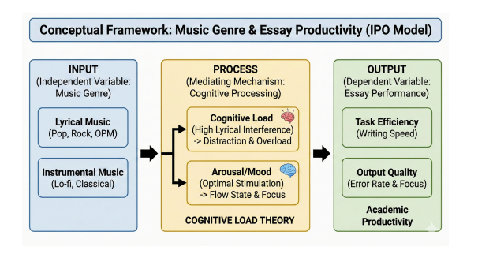
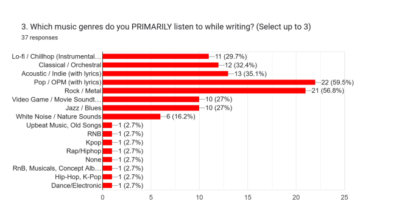
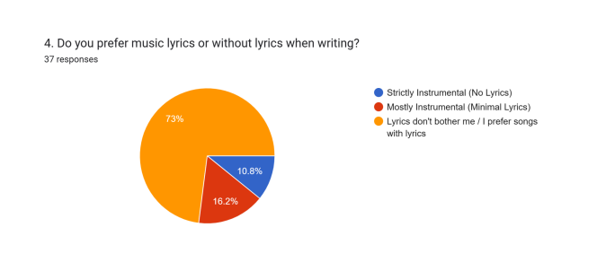

Multo
Cup of Joe
Demonstrates the habituation paradox: highly melodic, familiar Filipino pop provides emotional momentum and comfort during long writing sessions.
Study Audio Optimizer • Custom Playlist Engine
SoundFocus matches your mental workload to curated auditory textures. Break task inertia, regulate mood, and generate custom tracklists tailored to your writing sprint.
Instant State Presets
Select your current cognitive state to instantly retrieve an evidence-backed auditory profile.
When experiencing mental fatigue, your baseline requires upregulation. Fast-tempo Pop, OPM, or Rock generates dopamine, mitigates burnout, and breaks initial task resistance.
Featured OPM Case Studies
Three empirical examples demonstrating how familiar melodies, textured rhythms, and driving grooves support positive affect without semantic competition.
Demonstrates the habituation paradox: highly melodic, familiar Filipino pop provides emotional momentum and comfort during long writing sessions.
Layered indie guitars and cyclical melodic arrangements create an ambient acoustic cushion, ideal for sustained focus during exploratory drafting.
A rhythmic groove and steady tempo serve as an auditory metronome, synchronizing keyboard typing velocity during fast drafting sprints.
Dive Deeper
Understanding the cognitive science behind music-assisted essay writing.
Navigating university requirements demands rapid synthesis, continuous problem-solving, and heavy writing outputs under tight deadlines. In this high-intensity environment, emotional exhaustion and task fatigue often become far steeper hurdles than vocabulary retrieval.
Traditional pedagogical advice insists that students should write in absolute silence or stick strictly to classical instrumentals to avoid cognitive overload.
Yet across university libraries, coffee shops, and dorms, students routinely choose high-energy, lyrical genres like Pop, OPM, and Rock while drafting complex papers.
Our empirical research investigated this contradiction: familiar songs bypass the brain's phonological bottleneck through neurological habituation, providing the dopamine and stamina needed to finish essays.
Empirical Results
Causal-comparative survey findings from undergraduate students actively writing academic essays.
Deem music essential for mental survival
Report measurable writing speed gains
Tolerate or prefer lyrics while writing
Flow-state score for lyrical listeners

Illustrates how music genre inputs causally alter working memory load to dictate drafting speed and syntactic precision.

Pop/OPM (61.1%) and Rock/Metal (58.3%) dominate student writing sessions over traditional Lo-fi or Classical options.

Over 72% confirm lyrics cause no disruption, revealing a subconscious neurological habituation filter at work.
"Silence induces anxiety and phone checks. Music is our psychological shield."
Auditory Mechanics
Different sonic profiles solve distinct cognitive and emotional hurdles during long writing sessions.
Familiar vocal cadences provide cultural companionship and emotional comfort, softening the strain of isolated writing sessions.
Driving rhythms and acoustic intensity elevate physiological arousal, supplying the dopamine needed to break past task fatigue.
Steady, non-vocal beatscapes mask uncontrolled environmental noises (traffic, household chatter) without competing for working memory.
Common Questions
Unfamiliar lyrics do compete for working memory. However, repeated exposure enables neurological habituation: the brain treats familiar vocals as acoustic texture rather than semantic speech.
Total silence often amplifies internal anxiety and under-stimulation, prompting frequent smartphone checking. In shared households, it also leaves you exposed to sudden noise spikes.
It means intentionally shifting audio: deploy high-energy lyrical tracks during initial idea drafting to build momentum, then switch to instrumentals for syntactic editing.
No. Habituation relies on predictability. Novel songs force your brain to actively decode new lyrics and chord shifts, triggering the Irrelevant Speech Effect.
Moderate volume (50–65 dB) provides effective acoustic masking without commanding conscious attention. Blaring volume can overstimulate the nervous system.
Yes. Required general education essays are universal across engineering, architecture, and liberal arts curricula, sharing identical linguistic demands.
Practical Rules
Three evidence-based study principles to optimize your writing routine:
If silence makes you anxious or distracted, upbeat OPM, Pop, or Rock is a valid way to support dopamine regulation, not a sign of poor discipline.
Your brain easily filters songs you already know by heart. Keep familiar playlists on repeat while writing, and save new releases for later.
Use driving beats to generate rough drafts, and silent or instrumental tracks for final proofreading and structural edits.